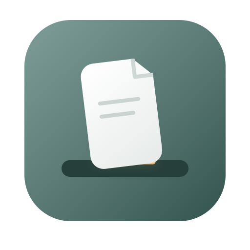

文件先搁好，
需要时再拖走。
菜单栏里的文件搁板。把待会儿要用的图片、文档、压缩包或文件夹放在手边，需要时再拖到目标位置。
Apple Silicon Mac · macOS 14 或更高版本
Mac App Store 版本正在准备上架，下载入口会在正式上架后补充。

从找到文件，到随手取用。
拖进来，先放好
将文件或文件夹拖到菜单栏图标或展开的搁板。搁板只保存引用，原文件留在原处。
点图钉，留在手边
临时项退出即清空。固定常用引用，重启后保留记录；最多容纳 20 项。
拖出去，继续使用
从卡片图标拖到 Finder、浏览器上传区或其他支持文件拖放的应用。
文件在原处，记录在本机。
无需账号，不做跟踪。固定记录和偏好保存在本机；移除搁板上的引用，不会删除原文件。
了解数据如何处理